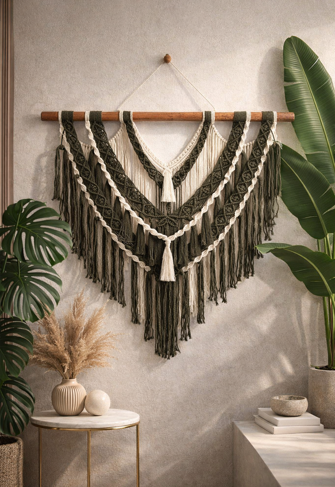

Arte que nasce das mãos
Cada peça criada pela artista carrega tempo, cuidado e intenção. Entre linhas, nós e texturas, surgem composições únicas que refletem sensibilidade e atenção a cada detalhe. Mais do que decoração, são expressões feitas à mão para dar personalidade e significado ao seu espaço.

Arte que nasce das mãos
Cada peça criada pela artista carrega tempo, cuidado e intenção. Entre linhas, nós e texturas, surgem composições únicas que refletem sensibilidade e atenção a cada detalhe. Mais do que decoração, são expressões feitas à mão para dar personalidade e significado ao seu espaço.

Detalhes que contam histórias
O encontro entre técnica e sensibilidade dá vida a peças que vão além da estética. Bordados e tramas em macramê criados à mão, com precisão e intenção, para quem busca algo exclusivo e cheio de significado.